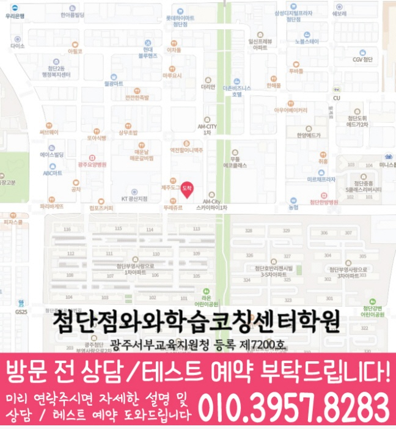

공식 암기만 반복하지 않고, 성취 기준에 맞춰 어떤 개념에서 막히는지 먼저 확인한 뒤 학습 순서를 설계합니다.


LOCAL ACADEMY GUIDE
광주 광산구 쌍암동 고2 수학학원 와와학습코칭센터 수학 학습 안내
광주 광산구 쌍암동에서 고2 수학학원을 찾는 학생을 위해, 기초부터 내신·수능형 문제까지 이어지는 학습 흐름을 안내합니다. 와와학습코칭센터는 진단을 바탕으로 개념을 탄탄히 하고, 단원별 유형을 체계적으로 훈련하며, 오답 원인까지 정리해 실력이 누적되도록 수업과 코칭을 함께 진행합니다.
쌍암동 고2 수업의 핵심 포인트
수학은 과정이 점수입니다. 개념 정리 후 대표 유형과 변형 문제를 거쳐 계산·서술 풀이까지 단계적으로 훈련합니다.
틀린 문제를 다시 풀기만 하지 않고, 왜 틀렸는지(계산/조건/개념/풀이순서)를 분류해 다음 학습에 반영합니다.
학교 시험 범위와 출제 경향에 맞춰 복습 주기·유형 우선순위를 조정해 시험 전 실수를 줄입니다.
선생님 특징
정답 여부뿐 아니라 풀이 순서, 조건 해석, 단위/기호 실수까지 세밀하게 확인하며 이해가 남도록 지도합니다.
고2 과정에서 흔들리는 단원(함수·그래프·확률과 통계 등)별로 필요한 연결 개념을 보완해 다음 단원으로 넘어갑니다.
숙제-복습-오답 정리를 루틴으로 만들고, 매주 실력 변화를 점검해 계획이 흐트러지지 않게 코칭합니다.
수학 성적 향상은 국어·영어 독해 습관과도 연결됩니다. 와와학습코칭센터는 전반 학습 균형을 함께 지도합니다.
수업 진행방식
1. 현재 수준 확인(진단)
학년 진도, 최근 시험 결과, 단원별 취약 유형을 확인해 고2 수학에서 반복되는 실수 지점을 정리합니다.
2. 개념 정리와 내신·유형 학습
단원 핵심 개념을 먼저 정리하고, 기출·내신형 대표 유형부터 난이도 변형 문제까지 단계적으로 훈련합니다.
3. 오답 관리와 성적 상승 피드백
오답 노트에 끝나지 않게 풀이 원인을 기록하고, 다음 수업에서 같은 유형이 다시 틀리지 않도록 반복 처방합니다.
고2 맞춤 학습 전략
함수·그래프/개념 기반
- 그래프 해석, 식-그래프 연결 능력을 반복 점검하며 실수 패턴을 줄입니다.
- 문제 조건을 먼저 정리하는 훈련으로 풀이 시간을 단축합니다.
확률·통계 실전형
- 공식 암기 대신 경우의 수 설정부터 과정 점검까지 집중 지도합니다.
- 유형별 오답 원인을 분류해 다음 문제에서 바로 적용합니다.
내신 서술/과정 점수
- 답만 쓰지 않고 ‘왜 그렇게 되는지’를 과정으로 설명하도록 훈련합니다.
- 시험 전에는 자주 나오는 실수 유형을 우선 복습합니다.
시간 관리와 실력 누적
- 문제 풀이 흐름을 루틴화해 같은 실수를 반복하지 않게 만듭니다.
- 주간 복습 계획을 점검해 고2 과정에서 필요한 누적 실력을 확보합니다.
광주 광산구 쌍암동 와와학습코칭센터는 고2 수학의 현재 위치를 기준으로 개념 보완부터 내신·수능형 문제까지 단계적으로 설계해드립니다. 상담을 통해 쌍암동 고2 수학 학습 방향과 준비 전략을 자세히 안내드립니다.
센터 위치 안내
주소
광주 광산구 월계로 191 404호
오시는 길
~ 와와학습코칭센터 첨단점 위치는 (광주 광산구 월계로 191 404호)입니다. 광주광역시 광산구 월계로191 첨단메디컬빌딩 4층 404호 1층에 김가네와 쿼드커피 사이에 입구가 있습니다 엘리베이터에서 내리셔서 바로 오른쪽에 센터가 위치합니다
주요 타깃학교(이외 학교도 수업 가능)
초등 타깃학교
월봉초
중등 타깃학교
천곡중
월봉중
고등 타깃학교
장덕고
과목별 수강 가능 학년
국어
초3
초4
초5
초6
중1
중2
중3
고1
고2
고3
영어
초3
초4
초5
초6
중1
중2
중3
고1
고2
고3
수학
초3
초4
초5
초6
중1
중2
중3
고1
고2
고3
과학
수강 가능 학년 정보 준비중
사회
수강 가능 학년 정보 준비중
학원 등록 정보
수업료는 어떻게 되나요? ✨
A - 서울 (1회 90-100분 수업기준)
| 횟수 | 초등 | 중등 | 고등 |
|---|---|---|---|
| 주 3회 | 249,000 | 266,000 | 299,000 |
| 주 4회 | 319,000 | 341,000 | 384,000 |
| 주 5회 | 389,000 | 416,000 | 469,000 |
B - 서울 외 지점 (1회 90-100분 수업기준)
| 횟수 | 초등 | 중등 | 고등 |
|---|---|---|---|
| 주 3회 | 219,000 | 236,000 | 269,000 |
| 주 4회 | 279,000 | 301,000 | 344,000 |
| 주 5회 | 339,000 | 366,000 | 419,000 |
* 수업료는 지역 및 횟수에 따라 일부 차이가 있을 수 있습니다.
고2 수학 상담부터 오답관리까지 이어지는 흐름
고2 수학은 단원 난도가 올라가고 내신과 모의고사의 풀이 방식이 달라지는 시기입니다. 상담에서는 현재 점수보다 개념 연결, 문제 해석, 오답 누적 원인을 먼저 확인합니다.
현재 수준 확인
학교 진도, 최근 시험 결과, 어려운 단원, 풀이 속도와 실수 유형을 확인합니다.
개념과 유형 진단
수학Ⅰ·수학Ⅱ 개념 이해, 조건 해석, 그래프·식 변형, 서술형 풀이 과정을 나누어 봅니다.
플래너 실행 점검
단원별 복습량, 유형 반복, 시험 범위 회독 계획을 세우고 실제 수행 여부를 확인합니다.
오답 원인 분석
틀린 문제를 개념 부족, 조건 누락, 계산 실수, 시간 부족으로 분류해 재학습으로 연결합니다.
HIGH SCHOOL MATH FAQ
고2 수학학원 FAQ
Q고2 수학은 어떤 단원부터 확인하나요?
학생의 학교 진도와 최근 시험 결과를 바탕으로 수학Ⅰ·수학Ⅱ의 개념 이해도, 유형 적용력, 오답 패턴을 먼저 확인합니다.
Q내신 대비와 모의고사 대비를 함께 할 수 있나요?
가능합니다. 학교 시험 범위를 우선으로 정리하되, 자주 틀리는 개념과 모의고사식 사고 과정을 함께 점검해 학습 균형을 맞춥니다.
Q고2 수학 오답 관리는 어떻게 진행되나요?
틀린 문제를 계산 실수, 개념 혼동, 조건 해석, 풀이 전략 부족으로 나누고 유사 유형 반복과 개념 재점검으로 연결합니다.
Q상담 전에 무엇을 준비하면 좋나요?
최근 시험지, 학교 진도, 어려운 단원, 모의고사 성적, 오답노트나 풀이 흔적을 준비하면 더 구체적인 상담이 가능합니다.
REAL PARENT REVIEWS
수강생 학부모 후기
쌍암동 고2 수학학원 정보를 확인하신 학부모님들이 참고할 수 있는 실제 학습 후기입니다.
학생들이 안전하게 다닐 수 있도록 관리해 주십니다.
아이의 실력에 맞춰 수업을 진행해 주셔서 학습 효과가 높았습니다.
단기간의 점수보다 올바른 공부 방법을 알려주셔서 좋았습니다.
수업과 상담 모두 세심하게 진행되어 만족하고 있습니다.
학부모가 놓치기 쉬운 부분까지 세심하게 안내해 주셨습니다.
학습 결과가 좋지 않을 때 원인을 함께 찾아주셔서 도움이 되었습니다.
STUDY GUIDE
쌍암동 고2 수학 학원 학습관리 포인트
쌍암동 고2 수학 학원을 찾는 학생이라면 고2 과정에서 필요한 수학 학습 목표를 먼저 정리하는 것이 좋습니다. 현재 학교 진도와 최근 시험 결과, 숙제 수행 습관을 함께 보면 상담 방향이 훨씬 구체적입니다.
공식 암기보다 단원 핵심 개념을 말로 설명할 수 있는지 확인하고, 설명이 막히는 부분부터 다시 정리합니다.
학교 시험에 자주 나오는 기본·응용 유형을 구분하고, 풀이 순서를 스스로 재현할 수 있게 반복합니다.
계산 실수, 조건 해석 오류, 개념 부족, 시간 부족을 나누어 기록하면 다음 복습 계획이 더 정확해집니다.
광주 광산구 쌍암동 상담 전 체크
최근 시험지, 학교 진도, 어려운 단원, 숙제 수행 정도를 함께 정리해두면 상담에서 학생에게 필요한 학습 순서를 더 빠르게 잡을 수 있습니다.
함께 보면 좋은 학습가이드
현재 페이지의 학년·과목과 연결되는 정보성 콘텐츠입니다. 지역 페이지와 함께 읽으면 상담 준비와 학습 계획을 더 구체화할 수 있습니다.
쌍암동 관련 학원 페이지
현재 보고 있는 지역 안에서 센터 안내와 학년·과목별 상세 페이지로 바로 이동할 수 있습니다.
쌍암동 고2 수학학원 상담이 필요하신가요?
고2 수학의 현재 단원 이해도, 내신 대비 계획, 오답 패턴을 정리해 상담문의로 남겨주시면 학습 방향을 더 구체적으로 확인할 수 있습니다.
상담문의